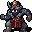
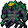

深層 The Depths
英語版 CrawlWiki の記事「The Depths」(0.33 向け、2025-05-28 版)の翻訳です。原文の著者は編集履歴をご覧ください。
この記事は 0.33 の時点の内容で、最新の 0.34 とは違うところがあるかもしれません。
| 深層は迷宮本体の最も深い部分で、ゾットの領域の一部とはみなされないものの、その堕落させる影響を受けている。 |
 深層は4階層ある分岐で、迷宮:15にある見張りつきのポータルから入る。構造はおおむね迷宮と似ているが、開けた空間や、凝った大型のヴォールト、階全体を使ったヴォールトが多めに出る。アビス、地獄の入り口、パンデモニウムへの入口がいくつかと、ジグラットへの入口が1つあるほか、深層:4にはさまざまなドラコニアンの衛兵に守られたゾットの領域への入口がある。
深層は4階層ある分岐で、迷宮:15にある見張りつきのポータルから入る。構造はおおむね迷宮と似ているが、開けた空間や、凝った大型のヴォールト、階全体を使ったヴォールトが多めに出る。アビス、地獄の入り口、パンデモニウムへの入口がいくつかと、ジグラットへの入口が1つあるほか、深層:4にはさまざまなドラコニアンの衛兵に守られたゾットの領域への入口がある。
ポータル
 深層:3には必ずアビスへのポータルが現れる。深層のほかの階にも33%の確率でポータルがある。
深層:3には必ずアビスへのポータルが現れる。深層のほかの階にも33%の確率でポータルがある。 深層のどの階にも地獄の入り口への入口がある。
深層のどの階にも地獄の入り口への入口がある。 深層のどこか1つの階にジグラットへのポータルが1つ現れる。
深層のどこか1つの階にジグラットへのポータルが1つ現れる。 深層:2には必ずパンデモニウムへのポータルが現れる。深層のほかの階にも25%の確率でポータルがある。
深層:2には必ずパンデモニウムへのポータルが現れる。深層のほかの階にも25%の確率でポータルがある。
戦略
ふつうは、迷宮:15を踏破してすぐに深層に入るのはお勧めできない。もっと楽な場所(獣の棲み処とその先の分岐、オークの坑道、宝物庫)が残っているからだ。
モンスター
深層で出会うと思っておくべきモンスターには、次のようなものがある:
| T |
T |
T |
T |
| C |
C |
C |
C |
| C |
C |
p |
p |
| p |
V |
V |
W |
| D |
D |
D |
D |
| D |
D |
D |
k |
| R  ラクシャーサ |
G |
G |
p |
| Q |
Q |
Q |
H |
| y |
b |
X |
u |
| i |
i |
i |
u |
| ; |
; |
; |
; |
| L |
L |
L |
f  ハンノキの王 |


ユニーク
| S |
H |
d |
L |
i |
| @ |
j |
V |
L |
R |
| @ |
A |
@ |
T |
o |
| Q |
9 |
D |
変更履歴
- 0.33 で、ハンノキの王と竜穴が、階層に不相応な強さのモンスターの一覧に加わった。
- 0.29 より前は、この分岐にあまたの目の球体が出ることがあった。
- 0.28 より前は、深層は5階層あった。また、階層に不相応な強さのモンスターとして、歩く魔導書ではなく上位の闇エルフが出た。
- 深層は 0.14 で追加され、迷宮の第16〜27階層に取って代わった。
| 分岐の一覧 |
|---|
| |
| 関連項目: ポータル |